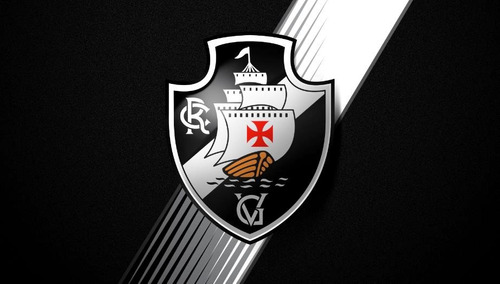

BFFV Notícias
BFFV Notícias
Saiba tudo sobre os 4 grandes clubes do RJ


Saiba tudo sobre os 4 grandes clubes do RJ
As notícias mais recentes do seu clube do coração estão aqui
Encontre aqui tudo de mais relevante que acontece no Botafogo, Flamengo, Fluminense e Vasco!
O escândalo de manipulação de jogos que assola o futebol brasileiro quase teve impacto no Botafogo. O lateral-esquerdo Marçal revelou, após a vitória por 3 a 0 sobre o Corinthians, que recebeu convite para participar da esquema. O jogador recusou. A informação é da repórter Talita Giudice, da Rádio Globo, na noite desta quinta-feira (12/5).– No meu caso, foi ano passado contra o Flamengo que eu tomo cartão por reclamação.
Diretor de relações externas do Flamengo, Cacau Cotta se tornou o primeiro dirigente de futebol da história a responder processo criminal por um ato desportivo, que aconteceu na final do Cariocão 2022. Após mais de um ano com a ação em aberto, o diretor compareceu à nova audiência sobre o caso às 15h (horário de Brasília) desta quarta-feira (10). Em exclusiva ao Coluna do Fla, Cacau foi incisivo ao dizer que o Rubro-Negro sofre “perseguição”.
O meia Nathan, ex-jogador do Fluminense e atualmente no Grêmio, é mais um atleta citado na Operação Penalidade Máxima II, que investiga a manipulação de apostas na Série A do Campeonato Brasileiro de 2022 e nos Estaduais deste ano. Ainda atuando pelo time carioca, o atleta teria sido cooptado para receber um cartão amarelo no jogo contra o Fortaleza, no Maracanã.
A torcida do Botafogo esgotou em apenas uma hora os ingressos do setor visitante do Estádio Hailé Pinheiro, em Goiânia, para o jogo contra o Goiás, no próximo domingo, às 18h30, pela sexta rodada do Campeonato Brasileiro.Os bilhetes para a torcida alvinegra custavam R$ 140 (inteira) e R$ 70 (meia), e as vendas iniciaram-se nesta sexta. A carga total de ingressos colocados à venda no Estádio da Serrinha foi de 12 mil – cerca de 1.200 para os visitantes.
O comentarista Pedrinho fez um forte desabafo no “Troca de Passes”, do SporTV, ao analisar a vitória do Botafogo em cima do Corinthians por 3 a 0, no Nilton Santos, pela quinta rodada do Brasileirão-2023. O ex-jogador se mostrou irritado com termos usados para se referir à torcida alvinegra, pediu mais respeito ao Glorioso e mais responsabilidade aos analistas e comentaristas de futebol em geral.
O escândalo de manipulação de jogos que assola o futebol brasileiro quase teve impacto no Botafogo. O lateral-esquerdo Marçal revelou, após a vitória por 3 a 0 sobre o Corinthians, que recebeu convite para participar da esquema. O jogador recusou. A informação é da repórter Talita Giudice, da Rádio Globo, na noite desta quinta-feira (12/5).– No meu caso, foi ano passado contra o Flamengo que eu tomo cartão por reclamação.
Flamengo e Bahia se enfrentam na tarde deste sábado (13), na Arena Fonte Nova, pela sexta rodada do Campeonato Brasileiro. De olho no confronto, o técnico Jorge Sampaoli terá ‘dor de cabeça’ para escalar a equipe. Isso porque, o Mais Querido possui seis desfalques para o embate. Na partida contra o Goiás, na quarta-feira (10), no Maracanã, Pedro sentiu dores no adutor da coxa e virou desfalque para o jogo diante do Bahia.
O Flamengo tem torcedores espalhados por toda parte do Brasil e do Mundo. Dessa vez, porém, o destaque vai para uma aldeia indígena localizada em Roraima, que possui vários ‘apaixonados’ pelo Mais Querido. Após entrarem em contato com Diego Ribas, o povo de Olomai recebeu doação de materiais esportivos por parte do ex-jogador do Rubro-Negro. Os líderes da aldeia Olamai produziram um vídeo, com auxílio de pesquisadores, e enviaram ao ex-jogador do Flamengo.
Filipe Luís está prestes a voltar aos gramados pelo Flamengo, pois o lateral esquerdo se recuperou da lesão na panturrilha esquerda. Porém, enquanto se tratava da contusão, o atleta, definitivamente, realizou o sonho e, agora, também é treinador de futebol. O lateral esquerdo concluiu o curso de “Licença B” na Confederação Brasileira de Futebol (CBF). Filipe Luís, inclusive, já tem o diploma e a carteirinha de treinador.
Depois dos lançamentos dos uniformes 1 e 2 produzidos pela Umbro, o site do jornal O Globo revelou qual é a previsão do Fluminense para lançar também o seu terceiro uniforme. De acordo com a publicação, com a expectativa de causar uma “surpresa” no público, o planejamento no clube é promover a nova camisa em setembro.O Fluminense lançou, recentemente, as camisas branca e tricolor, que já estão sendo utilizadas nos jogos.
Em seu canal no YouTube, o jornalista José Ilan revelou mais informações sobre a lesão de Alexsander no ligamento medial colateral do joelho esquerdo. De acordo com o profissional, o problema do volante do Fluminense não é tão simples, apesar de não ser grave, e um retorno aos campos antes de dois meses é pouco provável.Informa Ilan que a lesão de Alexsander é grau 2 (mediana – 1 seria mais leve e 3, mais pesada). O tratamento é conservador, sem cirurgia.
Em entrevista ao podcast “Mundo GV”, do ex-goleiro Getúlio Vargas, Mário Bittencourt abordou diversos assuntos e, entre eles, a realidade financeira do Fluminense. Ele, inclusive, revelou um prejuízo milionário após a venda de Luiz Henrique ao Betis (ESP).Por conta da guerra da Ucrânia (invadida pela Rússia), a variação cambial e queda do dólar fizeram o clube perder importantes valores. Nesta temporada, a intenção é manter o elenco até o fim do ano.
O Vasco vem de uma sequência de quatro jogos seguidos sem vencer pela Série A do Campeonato Brasileiro. Isso fez com que a pressão sobre o treinador Barbieri aumentasse ainda mais por parte dos torcedores vascaínos. De acordo com informações apuradas e trazidas pelo jornalista Jorge Nicola, através de vídeo publicado em seu canal no YouTube, a 777 Partners se posicionou em ralação ao futuro do comandante Maurício Barbieri. Vale destacar que o profissional vem sendo pressionado pela torcida vascaína pelos resultados na atual temporada.
Em entrevista ao canal Fanático Vascaíno, o presidente Jorge Salgado revelou que os 30% da Sociedade Anônima do Futebol (SAF) do Vasco da Gama que pertencem à associação poderão ser parcialmente vendidos para a quitação de dívidas por parte do Clube. O mandatário explicou que tratam-se de débitos que ainda não foram julgados judicialmente e, portanto, não entraram no último balanço financeiro divulgado pelo Gigante da Colina.
Herói do Vasco da Gama na noite desta quinta-feira (11), no empate por 1×1 com o Coritiba, pela quinta rodada do Brasileiro, Erick Marcus vai se colocando como uma boa opção para o ataque Cruzmaltino. O Cria da Colina marcou o gol que evitou a derrota vascaína. O jovem de 19 anos, revelado na base do Vasco, jogou apenas 15 minutos, o suficiente para anotar seu primeiro gol na competição e garantir um ponto para o Gigante da Colina fora de casa. Erick Marcus balançou as redes com o único chute que deu a gol na partida.
Jornalista
Narrador
Comentarista
Apresentador
Fundador
Programador
Administrador
Comentarista
Fundador
Programador
Administrador
Comentarista
Comente sobre nosso site ou nossas notícias